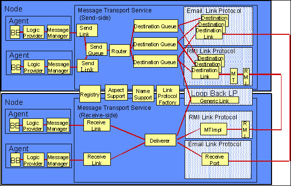
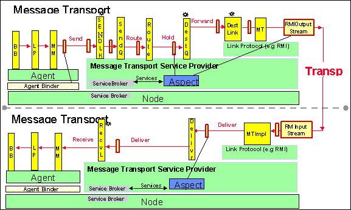

The basic stations are described below figure and also depicted in the "top view" diagram.

Figure Componentization of Message Transport ("top view"). This figure diagrammatically enumerates all the Message Stations.
When a message is sent from the sending Agent to the receiving Agent, it flows through a predefined series of stations, described below in the "side view" of the Services (see Figure below). A message flows from the sending Agent through a per-Agent Send Link, associated with the Agent's Message Transport Service Proxy, into a shared Send Queue. The act of dropping the message in the Send Queue terminates the invoking call. The Send Queue's dedicated thread then passes the each message to the Router, which picks a Destination Queue for that message. Each Destination Queue has its own thread and is responsible for delivering messages to the corresponding receiving Agent, even if that Agents isn't active at the time. The Destination Queues select the "best" LinkProtocol for each message and hand it off to a DestinationLink created by the LinkProtocol. The Destination Link then moves the message to the MessageDeliverer on the destination Node, using the given protocol (eg RMI, email, nttp, loopback, CORBA, or raw sockets). The MessageDeliverer finds the corresponding ReceiveLink for the message, which in turn hands the message off to the destination Agent. If the receiving Agent is no longer local, the MessageDeliverer will throw an exception back to the DestinationQueue in the sending Node

Figure The "side view" shows the flow of messages through the stations.
This interface specifies the Service itself, as seen by the Agent. The implementation class is MessageTransportServiceProxy, exactly one of which is created for each Agent which requests the MessageTransportService. The MessageTransportServiceProvider makes MessageTransportServiceProxy instances on demand. The implementation class does very little work itself. Most of the work is handled by a SendLinkImpl, which is created for the MessageTransportServiceProxy by the MessageTransportServiceProvider.
This is the first functional MTS station. The SendLink handles client registration, decides whether or not a given message can be sent, and in most circumstances starts the message on its way by placing it on the SendQueue. In ordinary message traffic, the calling thread of a message-send operation returns once the SendLink has placed the message on the SendQueue. SendLinkImpl, one of which is made for each MessageTransportServiceProxy by the MessageTransportServiceProvider, implements SendLink.
The SendQueue has two purposes: it keeps messages in order, and it prevents the calling thread of the sending Agent from blocking. As such the queue itself is simply a holding place for messages. SendQueueImpl, instances of which are created by the SendQueueFactory, implements the SendQueue interface. In the current design, SendQueueFactory is ServiceProvider for the SendQueue service. SendQueueImpl is a sublcass of MessageQueue and as such has an associated thread. In this case the thread pulls Messages off the queue and forwards them to the Router.
The Router has the job of sorting Messages by target (destination) and passing them to the corresponding DestinationQueue for that target. It uses the DestinationQueueProviderService, which will find or make at most one DestinationQueue for any given target. RouterImpl, instances of which are created by the RouterFactory, implements the Router interface. In the current design, RouterFactory is a ServiceProvider for the Router service.
The DestinationQueues have the job of selecting the "best" LinkProtocol for any given message, and delivering the message, in the correct order, to a DestinationLink provided by that LinkProtocol. The selection itself is handled indirectly, via the LinkSelectionPolicy (see below). DestinationQueueImpl, instances of which are created by the DestinationQueueFactory, implements the DestinationQueue interface. One DestinationQueueImpl is made for each referenced destination MessageAddress by the DestinationQueueProviderService. DestinationQueueImpl is a subclass of MessageQueue and as such has an associated thread. In this case the thread pulls Messages off the queue and attempts to dispatch them to a DestinationLink, which can deliver them. For any given Message these attempts will continue until the Message is successfully delivered.
DestinationLinks do the protocol-specific work of getting the message from the sender's Node to the receiver's Node. The DestinationLink implementation classes are specific to their corresponding LinkProtocol and are typically defined as inner classes of the protocol classes. See the LinkProtocol section for more details.
The MessageDeliverer has the job of finding the right ReceiveLink for each Message, and passing the Message off to that link once it's been found. MessageDeliverer is an MTS-level service, provided by the MessageDelivererFactory and implemented in the current design by a singleton MessageDelivererImpl instance.
ReceiveLinks simply accept Messages from the MessageDeliverer and hands them off to the ultimate recipient. ReceiveLinkImpl, instances of which are created by the ReceiveLinkFactory, implements the ReceiveLink interface. The MessageTransportRegistryService makes requests for instantiation on demand via the ReceiveLinkProviderService.
As the side-view diagram makes clear, message flow is divided into two parts, send and receive, with the linkage between the two left unspecified. There are a number of ways in which this linkage might be handled: it could be direct (for local messages), it could use an RMI or CORBA call, it could use email or news, it could use sockets, etc. The MTS implements these various kinds of linkages as instantiable subclasses of the abstract class LinkProtocol. These instantiable subclasses have full responsibility for getting a Message from the sender's Node to the receiver's Node. Some of these Link Protocols are part of the Cougaar 'core' module, some are from other modules supported by BBN, and some are from other developers. The BBN-supported Link Protocols are described here. Defining new LinkProtocol classes is one of two primary hooks through which the MTS can be extended (aspects are the other).
Link Protocols are connected to the message flow by the DestinationLink station. DestinationLinks can be thought of as destination-specific front ends to Link Protocols and are ordinarily defined as inner classes of LinkProtocol classes. The protocol itself is responsible for the real work of moving Messages, and also acts as the "factory" for its DestinationLinks.
For more details see